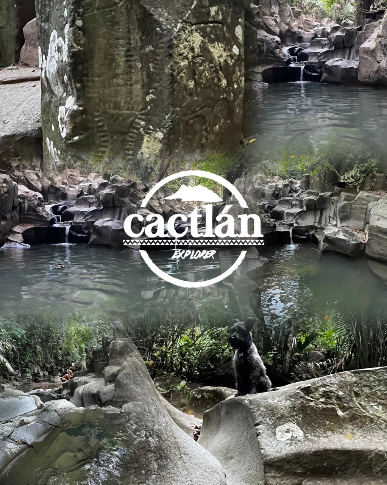

TOURS

CACTLÁN EXPLORER OPERADORA TURÍSTICA RECEPTIVA
VISTAS GUIADAS, TOURS Y ACTIVIDADES en Compostela pueblo mágico * Descripción breve:Somos una empresa que busca promover los atractivos turísticos, naturales, culturales e históricos del Municipio de Compostela y el estado de Nayarit así como de estados circunvecinos.Brindamos información turística, hospedaje y transportación
Naturaleza
Historia
Arquitectura